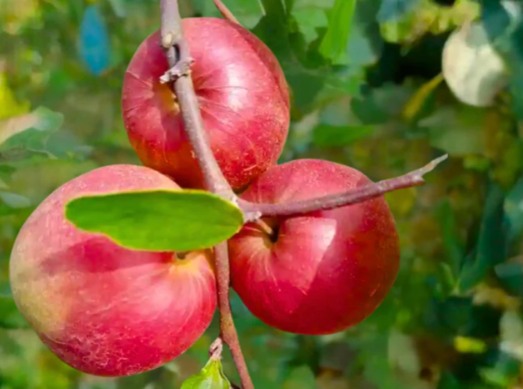
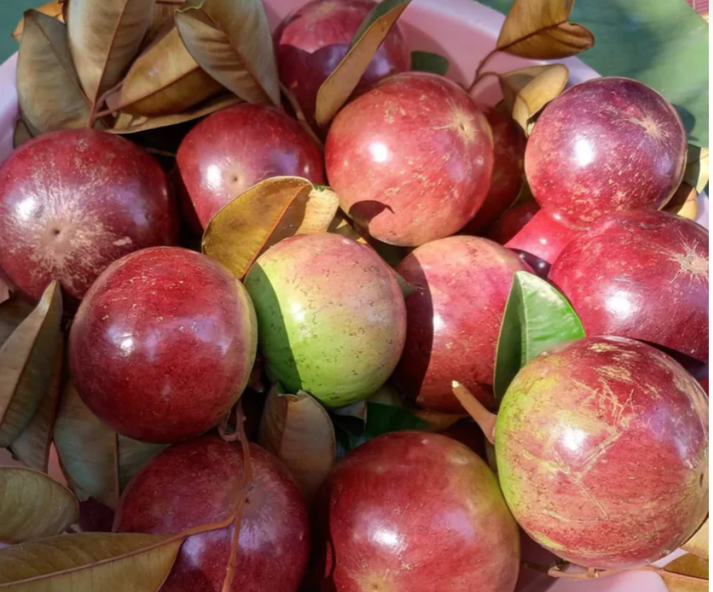
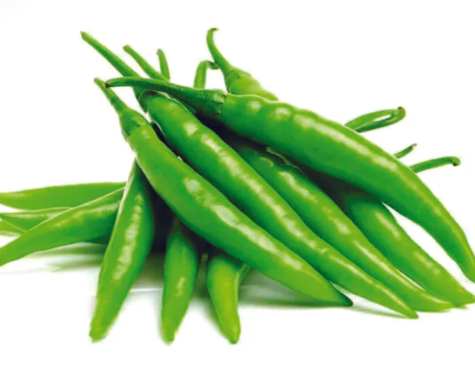
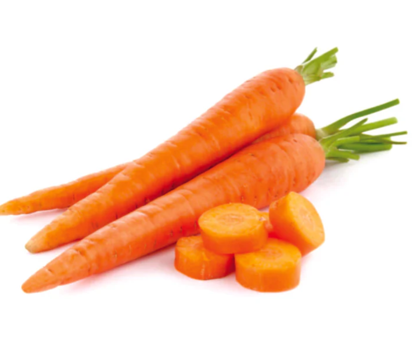

Hi bhuvanesh.d@syncfusion.com
Fresh Picks, Happy Times!
Syncfusion grocery store is the best store for purchasing fruits, vegetables etc,. It is a self-service shop offering a wide variety of food, beverages and household products, organized into sections. It is larger and has a wider selection than earlier grocery stores, but is smaller and more limited in the range of merchandise than a hypermarket or big-box market.

Shimla Apple
1 kg (Approx. 11-12 pcs)
1 kg (Approx. 11-12 pcs)

Pomegranate - Regular
1 kg (5-6 pcs per kg)
1 kg (5-6 pcs per kg)

Chilli
Organically Grown, 500 g
Organically Grown, 500 g

Carrot
1 kg
1 kg